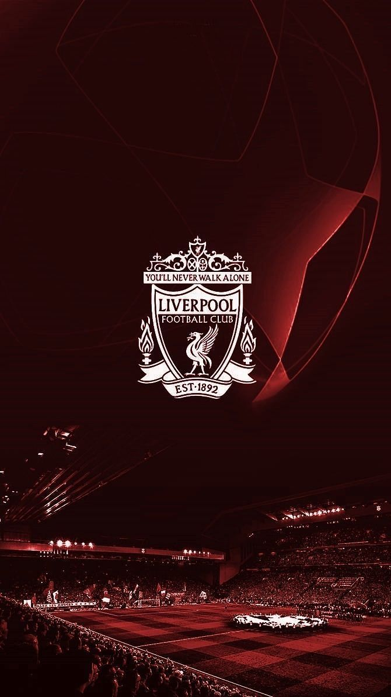

Liverpool
Tim yang dibawah kepemimpinan Arne Slot masih menjadi peringkat pertama. Gasalah memang Liverpool ini jadi tim terkuat Liga Inggris. #You Never Walk Alone.
Arsenal
Seperti yang kalian tahu, tim yang dilatih oleh Arteta ini bakal selalu menjadi no 2 dan menjadi penjaga piala orang. Jadi kelen jangan berharap tim ini bakal juara.

Crystal Palace
Siapa yang sangka tim yang dulunya papan bawah sekarang naik ke peringkat 3, semua berkat kerja keras Oliver Glasner yang merombak tim. MU? entah kapan naiknya 😅.